4 DÍAS GYM - ALEJANDRA
Pautas para el entrenamiento
1. Intenta no excederte con la intensidad, probablemente puedas más en algunos
ejercicios, pero no es necesario para conseguir todos los beneficios.
2. Si notas demasiado cansancio el cual no te permite hablar con normalidad,
para unos
minutos hasta recuperarte.
3. Evita ejercicios con saltos o un gran impacto.
4. Si notas demasiada presión o tensión abdominal deberás disminuir la intensidad del
ejercicio. Si continúas con molestias consulta antes con la entrenadora.
PAUTAS PARA EL ENTRENAMIENTO:
1. Realiza ejercicios controlados con una correcta técnica.
2. Controla la fase excéntrica del ejercicio. Ejemplo: Cuando realizas una sentadilla
controla la bajada. Cuando realizas una flexión controla la bajada.
3. En los ejercicios de fuerza intenta no llegar al fallo técnico. Es decir, si en una serie
puedes hacer máximo 15 repeticiones no las hagas todas, en este caso te quedarías en
unas 12-13. Deja siempre 2 o 3 repeticiones en la recámara.
4. Recuerda siempre activar el abdomen previamente con una respiración profunda y
metiendo ombligo al soltar el aire por la boca
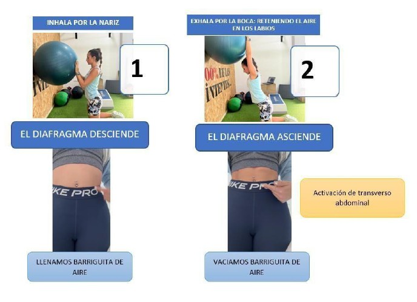
Esquema de la planificación semanal
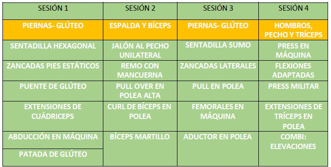
Sesión 1: Piernas - Glúteo
SESIÓN 1: PIERNAS - GLÚTEO
PARTE 1. CALENTAMIENTO: MOVILIDAD CADERA / RODILLAS Y ACTIVACIÓN ABDOMINAL
REALIZA 2 SERIES DE 10 REPETICIONES DE CADA UNO DE ESTOS EJERCICIOS:
•
Al mismo tiempo que realizas el ejercicio, inspira por la nariz y exhala por la boca
(activando tu transverso). Para preparar y calentar el abdomen para la parte principal.
•
PARTE 2. PARTE PRINCIPAL (1)
PARA TODOS LOS EJERCICIOS.
REALIZA 4 SERIES DE 10 REPETICIONES AL 65-70% DE INTENSIDAD.
DEJÁNDOTE 2 REPETICIONES EN RECÁMARA.
ENTRE CADA SERIE DESCANSA 1’ 30’’.
ES PRIMORDIAL LA CORRECTA ACTIVACIÓN DEL TRANSVERSO Y LLEVAR UNA RESPIRACIÓN CORRECTA.
INHALA AL BAJAR Y EXHALA AL SUBIR.
EJERCICIO 1: SENTADILLA HEXAGONAL
OPCIÓN 1: SI HAY BARRA HEXAGONAL
OPCIÓN 2: SI NO HAY BARRA HEXAGONAL
Utiliza 2 kettlebells laterales.
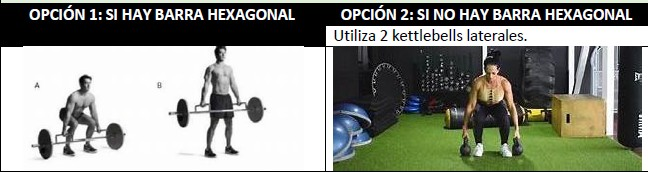
EJERCICIO 2: ZANCADAS CON PIES ESTÁTICOS (BARRA O MANCUERNAS)
FLEXIONA Y EXTIENDE RODILLAS SIN MOVER LOS PIES.
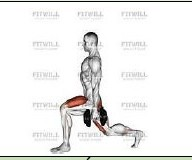
EJERCICIO 3: PUENTE DE GLÚTEO CON ACTIVACIÓN DE TRANSVERSO
Coloca la mancuerna en la pierna, nunca en tu pubis.
Usa una mini band para activar más el glúteo,
ya que la carga no debe ser demasiado elevada.
En el momento de subir la cadera, exhala por la boca metiendo el ombliguito.
EJERCICIO 4: EXTENSIONES DE CUÁDRICEPS
EJERCICIO 5: ABDUCCIÓN EN MÁQUINA
EJERCICIO 6: PATADA DE GLÚTEO
Apoya las manos en el soporte (dónde normalmente va tu pecho-barriguita).
También puedes hacerlo en polea.
Usa una carga que no te moleste mucho el pubis.
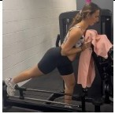
CARDIO: 10’ EN MÁQUINA AERÓBICA A ELEGIR (CINTA ANDANDO, BICLETA…)
PARTE 3: TRANSVERSO Y SUELO PÉLVICO
Realiza 3 series de 10 repeticiones de los siguientes dos ejercicios.
Descansa 1’ entre cada
serie, realizando movimientos pélvicos.
Pull con goma
Contracciones isométricas
https://youtu.be/FZORYE2qGVE?si=oOOXD
6C0ZtDP3k1R
https://youtu.be/SDRkeKZkB0Y?si=aETZgDr
rdwk3SRL0
Sesión 2: Espalda y Bíceps
SESIÓN 2: ESPALDA Y BÍCEPS
PARTE 1. CALENTAMIENTO: MOVILIDAD Y ACTIVACIÓN ABDOMINAL
REALIZA 2 SERIES DE 10 REPETICIONES DE CADA UNO DE ESTOS EJERCICIOS:
•
Al mismo tiempo que realizas el ejercicio, inspira por la nariz y exhala por la boca
(activando tu transverso). Para preparar y calentar el abdomen para la parte principal.
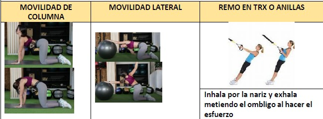
Inhala por la nariz y exhala metiendo el ombligo al hacer el esfuerzo.
PARTE 2. PARTE PRINCIPAL (1)
PARA TODOS LOS EJERCICIOS.
REALIZA 4 SERIES DE 10 REPETICIONES AL 65-70% DE INTENSIDAD.
DEJÁNDOTE 2 REPETICIONES EN RECÁMARA. ENTRE CADA SERIE DESCANSA 1’ 30’’.
ES PRIMORDIAL LA CORRECTA ACTIVACIÓN DEL TRANSVERSO Y LLEVAR UNA RESPIRACIÓN
CORRECTA. INHALA AL BAJAR Y EXHALA AL SUBIR.
EJERCICIO 1: JALÓN AL PECHO UNILATERAL
EJERCICIO 2: REMO CON MANCUERNA
EJERCICIO 3: PULL OVER EN POLEA ALTA
EJERCICIO 4: CURL DE BÍCEPS CON POLEA
EJERCICIO 5: BÍCEPS MARTILLO
CARDIO: CIRCUITO 30’’ 15’’ (3 RONDAS)
TIMER:
https://youtu.be/oIm1oN-bZSM?si=ssCFB7idNCbDz8px
KETTLEBELL SWING
SUBIDA Y BAJADA DISCO O STEP
DUMBELL SNATCH
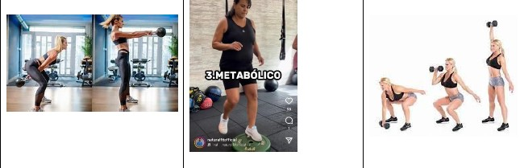
SUELO PÉLVICO y TRANSVERSO ABDOMINAL
REALIZA 3 SERIES DE 10 REPETICIONES DE LOS SIGUIENTES EJERCICIOS.
Descansa 1’ entre serie.
PRESS PALLOF ARRIBA Y ABAJO
ASCENSOR
https://youtu.be/XaGU0DhEjic?si=di-
NaKUk_Sh8u2mP
Sesión 3: Piernas - Glúteo
SESIÓN 3: PIERNAS-GLÚTEO
PARTE 1. CALENTAMIENTO: MOVILIDAD Y ACTIVACIÓN ABDOMINAL
REALIZA 2 SERIES DE 10 REPETICIONES DE CADA UNO DE ESTOS EJERCICIOS:
•
Al mismo tiempo que realizas el ejercicio, inspira por la nariz y exhala por la boca
(activando tu transverso). Para preparar y calentar el abdomen para la parte
principal.
•
VIDEO: MOVILIDAD (ENVIADO POR WHATSAPP)
PARTE 2. PARTE PRINCIPAL (1)
PARA TODOS LOS EJERCICIOS.
REALIZA 4 SERIES DE 10 REPETICIONES AL 65-70% DE INTENSIDAD. DEJÁNDOTE 2
REPETICIONES EN RECÁMARA. ENTRE CADA SERIE DESCANSA 1’ 30’’.
ES PRIMORDIAL LA CORRECTA ACTIVACIÓN DEL TRANSVERSO Y LLEVAR UNA RESPIRACIÓN
CORRECTA. INHALA AL BAJAR Y EXHALA AL SUBIR.
EJERCICIO 1: SENTADILLA SUMO
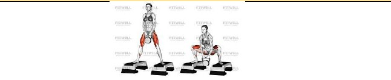
EJERCICIO 2: ZANCADAS LATERALES CON PIES ESTÁTICOS (FLEXIONA Y EXTIENDE RODILLA SIN MOVER LOS PIES).
EJERCICIO 3: PULL EN POLEA
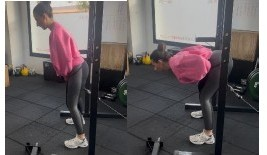
EJERCICIO 5: FEMORALES SENTADA EN MÁQUINA
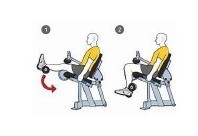
EJERCICIO 6: ADUCTOR EN POLEA O MÁQUINA (según molestia pubalgia)
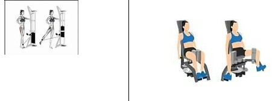
CARDIO: AMRAP: 7 minutos
Realiza el mayor nº de vueltas que puedas de los siguientes ejercicios:
10 ground to over head con disco de 5kg:
https://youtu.be/z0N25y8FEJ4?si=VbjQ4OUIqU55ws0t
15 sentadillas acabando de puntillas (adaptación a la sentadilla salto):
https://youtube.com/shorts/El8WAR2liMU?si=2xOyPXM1RI6K4tf0
12 jumping jacks con tracción y empuje: Opción 2 sin salto
https://youtube.com/shorts/-D1PoqZz6nk?si=4jdNyk8mKIMUSl81
TRANSVERSO ABDOMINAL Y SUELO PÉLVICO
3 RONDAS DE 30’’ DE TRABAJO Y 15’’ DE DESCANSO. ENTRE SERIE DESCANSA 1’.
PLANCHA MANOS EN ALTURA (30’’)
ELEVACIÓN DE PIERNA EN CUADRUPEDIA
https://youtu.be/EmIf9-
Q1pTs?si=BRQGErbxvJVKq50N
https://youtu.be/1w51mYQDS8I?si=jVILT0Y
dIr56voOL
Sesión 4: Pectoral, Hombros y Tríceps
SESIÓN 4: PECTORAL, HOMBROS Y TRÍCEPS.
PARTE 1. CALENTAMIENTO: MOVILIDAD Y ACTIVACIÓN ABDOMINAL
REALIZA 2 SERIES DE 10 REPETICIONES DE CADA UNO DE ESTOS EJERCICIOS.
•
Al mismo tiempo que realizas el ejercicio, inspira por la nariz y exhala por la boca
(activando tu transverso). Para preparar y calentar el abdomen para la parte principal.
EJERCICIO 1
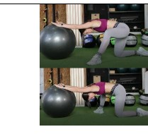
EJERCICIO 2
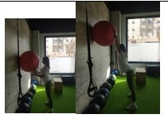
EJERCICIO 3
Si no hay goma larga, usa la polea.
https://youtu.be/CIH_3tRCF
vg?si=KQ3KyVk_6NqJ0oaf
PARTE 2. PARTE PRINCIPAL (1)
REALIZA 4 SERIES DE 10 REPETICIONES. DESCANSA 1’ ENTRE SERIE.
ACTIVA MUY BIEN TU ABDOMEN Y CONCÉNTRATE EN LA FASE DE MAYOR ESFUERZO.
EJERCICIO 1: EMPUJE EN MÁQUINA
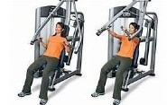
EJERCICIO 2: FLEXIONES ADAPTADAS (MANOS EN ALTURA)
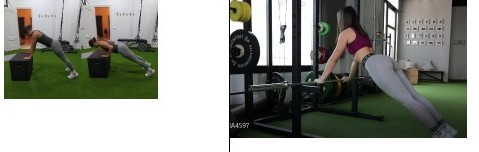
EJERCICIO 3: PRESS MILITAR EN MÁQUINA O MANCUERNAS
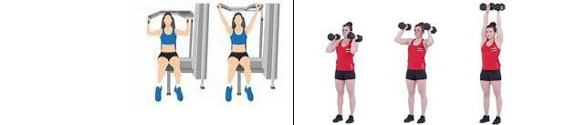
EJERCICIO 4: EXTENSIONES DE TRÍCEPS EN POLEA
EJERCICIO 5 Y 6: BISERIE (ELEVACIONES DE HOMBROS FRONTALES Y HORIZONTALES)
CARDIO/ ABDOMINALES: REALIZA UN TABATA DE 20’’ DE TRABAJO Y 10’’ DE DESCANSO
DE LOS SIGUIENTES EJERCICIOS:
TIMER:
BURPEES EN ALTURA
ABDOMEN EN BANCO
https://youtube.com/shorts/X1gR7ykt2_I?s
i=1aicd9lGT4fdUd9w
https://youtu.be/vpgIp8cD5os?si=0JHk4Y6
1SEyvA1v6